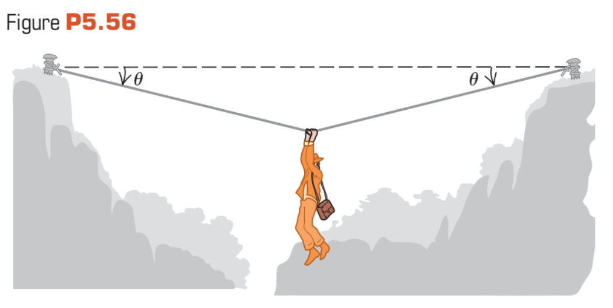

An adventurous archaeologist crosses between two rock cliffs by slowly going hand over hand along a rope stretched between the cliffs. He stops to rest at the middle of the rope (Fig. 5.56). The rope will break if the tension in it exceeds 2.50 $\times$ 10$^4$ N, and our hero's mass is 90.0 kg. (a) If the angle $\theta$ is 10.0$^{\circ}$, find the tension in the rope. (b) What is the smallest value the angle $\theta$ can have if the rope is not to break?
Two ropes are connected to a steel cable supports a hanging weight shown in Fig. 5.57. (a) Draw a free-body diagram showing all the forces acting at the knot that connects the two ropes to the steel cable. Based on your force diagram, which of the two ropes will have the greater tension? (b) If the maximum tension either rope can sustain without breaking is 5000 N, determine the maximum value of the hanging weight that these ropes can safely support. You can ignore the weight of the ropes and the steel cable.
In Fig. P5.58 a worker lifts a weight $w$ by pulling down on a rope with force $\vec{F}$. The upper pully is attached to the ceiling by a chain, and the lower pulley is attached to the weight by another chain. In terms of $w$, find the tension in each chain and the magnitude of the force $\vec{F}$ if the weight is lifted at a constant speed. Include the free-body diagram or the diagrams you used to determine your answers. Assume that the rope, pulleys, and chains all have negligible weights.
A solid uniform 45.0-kg ball of diameter 32.0 cm is summported against a vertical, frictionless wass using a thin 30.0-cm wire of negligible mass, as shown in Fig. P5.59. (a) Draw a free-body diagram for the ball and use it to find the tension in the wire. (b) How hard does the ball push against the wall?